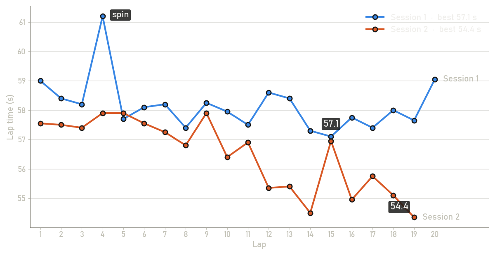

NIGHT KARTING
17 · 10 · 2026 · 2-hour race · wet track
Montage 3:18 · tap a chapter to jump to it · download it.
Download
Single moments, ready to share:
The spin (lap 4)Overtake on #35 + replayDoor to door with #39White helmet squeezes pastYellow helmet sneaks bySide by side, green sectionWhite kart in the green glowSide by side, pit straightBest lap at 4×Kerb strike (5 G)Out of the pitsAt dusk (split screen)
Session 1 best
≈ 57.1 s
46.3 km/h · lap 15 of 20 timed · avg 58.2 s
Session 2 best
≈ 54.4 s
48.7 km/h · lap 19 of 19 timed · avg 56.5 s
Improvement
−2.7 s
best lap, session 2 vs 1
Distance
≈ 28.7 km
39 timed laps of a ≈ 735 m track
Peak cornering
≈ 1.2 G
sustained, from the GoPro's accelerometer
Lap times

No GPS on track, so lap times are estimated from the GoPro's gyroscope: every lap repeats the same pattern of turns, and the time between repeats is the lap time. Treat them as rough estimates, give or take a few tenths, and a few laps per session could not be timed. The track length comes from the venue's timing screen, where lap time × speed works out to about 735 m.
Photos


Every highlight
45 moments from the raw footage
| Source | File | Time | Type | What happens | Rating |
|---|---|---|---|---|---|
| Trackside (phone) | phone video | 0:01–0:09 | Race | At dusk: a packed field bunched up through the S-bends | 8/10 |
| Trackside (phone) | phone video | 0:46–0:55 | Race | Karts streaming across the start/finish line past the flag marshal, one right under the camera | 7/10 |
| Trackside (phone) | phone video | 1:03–1:10 | Race | One lap later the field is still nose to tail through the S-bends | 7/10 |
| Session 1 | GX010230.MP4 | 1:19–1:26 | Launch | Out of the pits and into the wet night | 6/10 |
| Session 1 | GX010230.MP4 | 2:06–2:14 | Scenic | Kissing the kerbs under the floodlights | 5/10 |
| Session 1 | GX010230.MP4 | 2:19–2:24 | Scenic | Flat out past the pit wall | 5/10 |
| Session 1 | GX010230.MP4 | 2:50–2:56 | Got passed | Yellow helmet sneaks by on the right | 6/10 |
| Session 1 | GX010230.MP4 | 3:12–3:20 | Scenic | Hairpin, then down the main straight | 5/10 |
| Session 1 | GX010230.MP4 | 3:44–3:49 | Scenic | Night lights, wet track, hands full of carbon | 5/10 |
| Session 1 | GX010230.MP4 | 5:05–5:15 | Spin | Spin at the wet lap 4 hairpin: the rear steps out, the kart ends up sideways, a kart slips past, ~3 s lost | 9/10 |
| Session 1 | GX010230.MP4 | 5:17–5:21 | The chase | Hunting down the kart ahead onto the main straight | 5/10 |
| Session 1 | GX010230.MP4 | 6:31–6:35 | Wheel to wheel | Side by side under the green lights, nobody lifting | 7/10 |
| Session 1 | GX010230.MP4 | 6:41–6:47 | Got passed | Company on the right! White helmet squeezes past through the corner | 7/10 |
| Session 1 | GX010230.MP4 | 8:01–8:07 | Scenic | Kissing the red-and-white at the hairpin | 5/10 |
| Session 1 | GX010230.MP4 | 9:08–9:13 | Scenic | Lap after lap, the wall gets closer | 5/10 |
| Session 1 | GX010230.MP4 | 10:06–10:10 | Scenic | Green lights, red kerbs, full send | 5/10 |
| Session 1 | GX010230.MP4 | 10:34–10:38 | The chase | Reeling in the grey kart under the floodlights | 6/10 |
| Session 1 | GX010230.MP4 | 10:42–10:50 | Wheel to wheel | Door-to-door with #39 through the tyre stacks | 7/10 |
| Session 1 | GX010230.MP4 | 11:04–11:08 | Scenic | Night lap through the green and the kerbs | 5/10 |
| Session 1 | GX010230.MP4 | 12:30–12:34 | Overtake | Slipping past #35 at the tyre-stack hairpin | 8/10 |
| Session 1 | GX010230.MP4 | 13:15–13:20 | The chase | Chasing the pack round the hairpin, then side-by-side into the green | 6/10 |
| Session 1 | GX010230.MP4 | 13:27–13:31 | The chase | Grandstand blast, then hairpin hunting | 5/10 |
| Session 1 | GX010230.MP4 | 14:00–14:03 | The chase | Kerbs on the right, rivals all around | 6/10 |
| Session 1 | GX010230.MP4 | 14:16–14:19 | Wheel to wheel | Door to door with the white kart in the green glow | 7/10 |
| Session 1 | GX010230.MP4 | 14:26–14:30 | The chase | Reeling in the pack at the hairpin | 7/10 |
| Session 1 | GX010230.MP4 | 14:41–14:46 | The chase | Kerb bash, then right on their tail | 5/10 |
| Session 1 | GX010230.MP4 | 14:48–14:53 | The chase | Out of the green glow and onto their bumper | 6/10 |
| Session 1 | GX010230.MP4 | 14:57–15:01 | The chase | Green lights, red kerbs, full send | 5/10 |
| Session 1 | GX010230.MP4 | 15:10–15:13 | The chase | Stalking them round the hairpin | 5/10 |
| Session 1 | GX010230.MP4 | 15:24–15:27 | The chase | Chasing the red helmet through the hairpin | 6/10 |
| Session 1 | GX010230.MP4 | 15:45–15:49 | The chase | Neon corner, kart in the crosshairs | 5/10 |
| Session 1 | GX010230.MP4 | 15:54–15:58 | Scenic | Floodlit kerb run | 5/10 |
| Session 1 | GX010230.MP4 | 16:53–16:57 | Wheel to wheel | Side by side down the pit straight with the pink-top kart | 6/10 |
| Session 1 | GX010230.MP4 | 17:18–17:23 | Scenic | Arms crossed, sending it into the hairpin | 5/10 |
| Session 1 | GX010230.MP4 | 19:45–19:49 | Scenic | Flat out down the pit straight under the lights | 5/10 |
| Session 1 | GX010230.MP4 | 20:38–20:42 | Wheel to wheel | Side by side with #42 off the kerb | 5/10 |
| Session 1 | GX010230.MP4 | 21:02–21:07 | Wheel to wheel | Elbows out with #19 under the green lights | 5/10 |
| Session 1 | GX010230.MP4 | 21:42–21:49 | Finish | Session done, cruising back to the pits | 5/10 |
| Session 1 | GX010230.MP4 | 21:49–21:55 | Pit lane | Parked up, job done | 5/10 |
| Session 2 | GX010231.MP4 | 0:01–0:04 | Pit lane | Rows of rentals, a red helmet next door, and we're strapping in | 6/10 |
| Session 2 | GX010231.MP4 | 0:41–0:47 | Pit lane | Pit crew topping up the electric beast | 5/10 |
| Session 2 | GX010231.MP4 | 0:47–0:50 | Launch | Unplugged and unleashed | 5/10 |
| Session 2 | GX010231.MP4 | 10:55–11:00 | Scenic | Finally, a glimpse of the actual track | 5/10 |
| Session 2 | GX010231.MP4 | 19:52–19:59 | Pit lane | Session over: park it, hop out, walk away | 5/10 |
| Session 2 | GX010231.MP4 | 20:16–20:21 | Pit lane | Green visor rolls in right under the lens | 6/10 |
Times point into the original, unedited recordings.